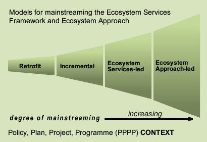

The project worked with a number of case studies to understand how well the Ecosystem Approach is being delivered in practice.
The lessons learned from these case studies informed the development of adapted tools and the guidance included in the NEAT Tree.
The case studies show the universal importance of Ecosystem Mapping at the SURVEY phase of the policy cycle.
The case studies adopt four different models of delivering the Ecosystem Approach as shown in the diagram below:
| Case Study | Approach |
|---|---|
| Cotswolds Area of Outstanding Natural Beauty (AONB) | Retrofit |
| Much Wenlock Neighbourhood Plan | Retrofit |
| The Greater Birmingham and Solihull Local Enterprise Partnership | Retrofit |
| Isle of Wight AONB Management Plan Review Process | Incremental |
| North Devon and Torridge Joint Local Plan | Incremental |
| Strategic Environmental Assessment of the Scottish Rural Development Programme | Incremental |
| Exmoor Payment for Ecosystem Services scheme | Ecosystem services-led |
| Re-thinking the City of Birmingham from an Ecosystem Services perspective | Ecosystem services-led |
| South Downs Nature Improvement Area (NIA) | Ecosystem services-led |
| Staffordshire Ecosystem Assessment | Ecosystem services-led |
| Natural Resources Wales | Ecosystem approach-led |
RETROFIT - where ecosystem services have been bolted on retrospectively to an existing plan output and therefore has not influenced the direction and scope of the plan explicitly.
INCREMENTAL – where ecosystem services have been integrated within the process but as a separate part limiting its overall application.
ECOSYSTEM SERVICES-LED – where ecosystem services has been embedded in the process from the start and thus is able to inform subsequent stages of the assessment, planning and delivery stages.
ECOSYSTEM APPROACH-LED – where the 12 principles of the Ecosystem Approach have been embedded into the process from the start.